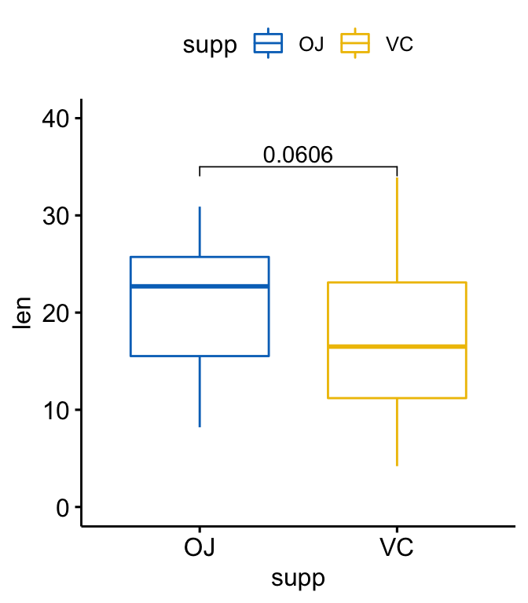
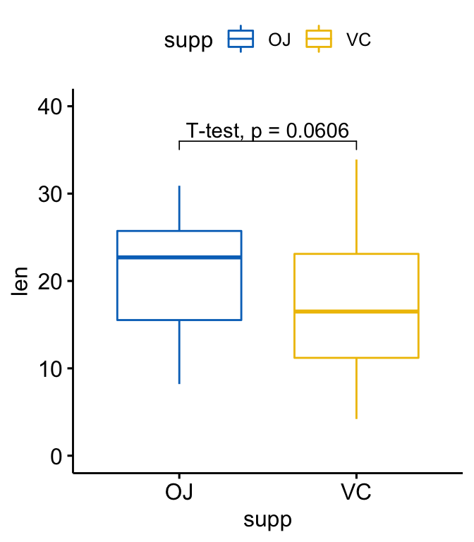
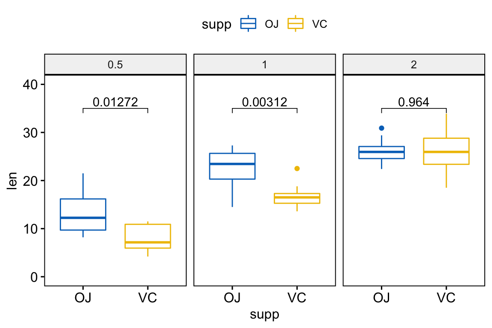
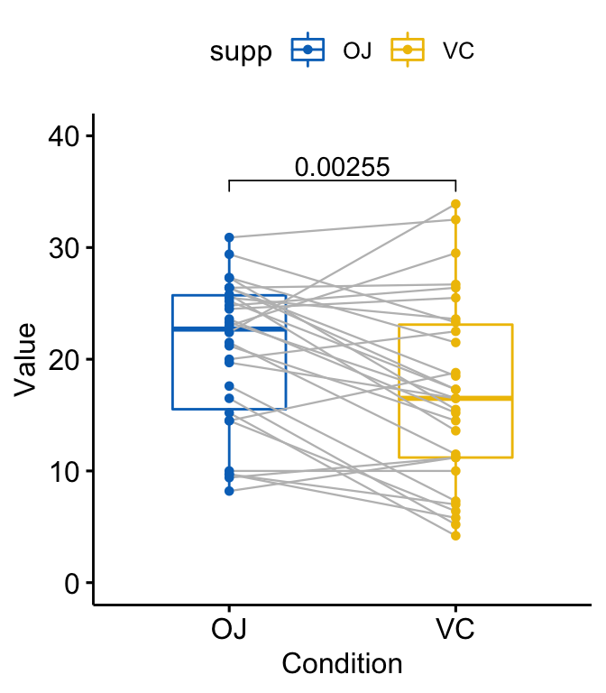
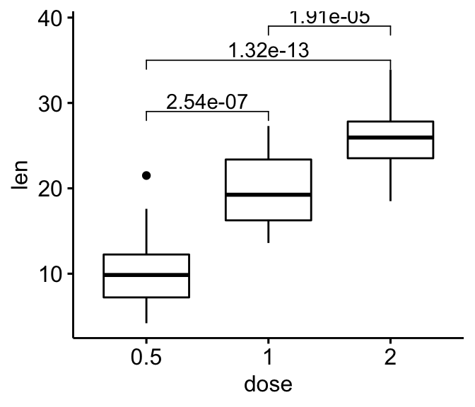
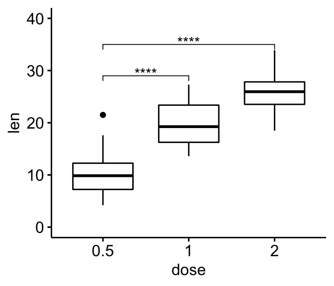
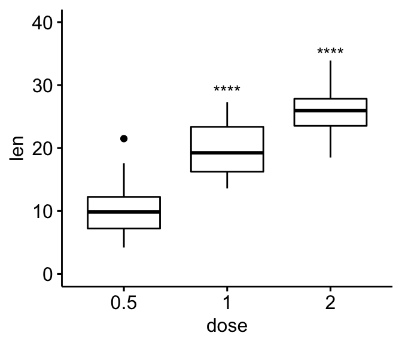
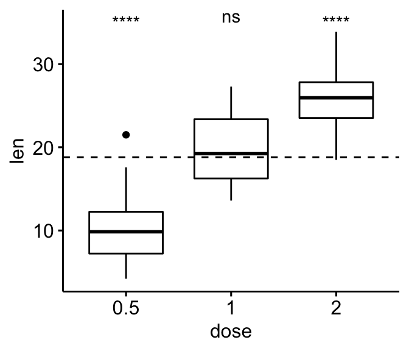
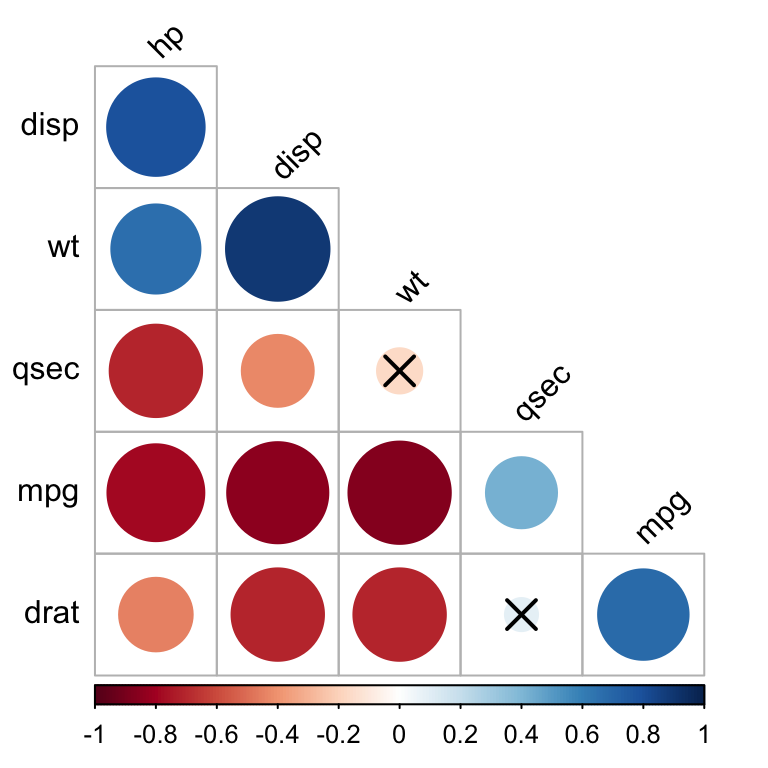

rstatix packageText here is from githib page of rstatix (https://github.com/kassambara/rstatix/)
rstatix Provides a simple and intuitive pipe-friendly framework, coherent with the ‘tidyverse’ design philosophy, for performing basic statistical tests, including t-test, Wilcoxon test, ANOVA, Kruskal-Wallis and correlation analyses.
The output of each test is automatically transformed into a tidy data frame to facilitate visualization.
Additional functions are available for reshaping, reordering, manipulating and visualizing correlation matrix. Functions are also included to facilitate the analysis of factorial experiments, including purely ‘within-Ss’ designs (repeated measures), purely ‘between-Ss’ designs, and mixed ‘within-and-between-Ss’ designs.
It’s also possible to compute several effect size metrics, including “eta squared” for ANOVA, “Cohen’s d” for t-test and “Cramer’s V” for the association between categorical variables. The package contains helper functions for identifying univariate and multivariate outliers, assessing normality and homogeneity of variances.
get_summary_stats(): Compute summary statistics for one
or multiple numeric variables. Can handle grouped data.freq_table(): Compute frequency table of categorical
variables.get_mode(): Compute the mode of a vector, that is the
most frequent values.identify_outliers(): Detect univariate outliers using
boxplot methods.mahalanobis_distance(): Compute Mahalanobis Distance
and Flag Multivariate Outliers.shapiro_test() and mshapiro_test():
Univariate and multivariate Shapiro-Wilk normality test.t_test(): perform one-sample, two-sample and pairwise
t-testswilcox_test(): perform one-sample, two-sample and
pairwise Wilcoxon testssign_test(): perform sign test to determine whether
there is a median difference between paired or matched
observations.anova_test(): an easy-to-use wrapper around
car::Anova() to perform different types of ANOVA tests,
including independent measures ANOVA, repeated
measures ANOVA and mixed ANOVA.get_anova_test_table(): extract ANOVA table from
anova_test() results. Can apply sphericity correction
automatically in the case of within-subject (repeated measures) designs.
- welch_anova_test(): Welch one-Way ANOVA test. A
pipe-frindly wrapper around the base function
stats::oneway.test(). This is is an alternative to the
standard one-way ANOVA in the situation where the homogeneity of
variance assumption is violated.kruskal_test(): perform kruskal-wallis rank sum
testfriedman_test(): Provides a pipe-friendly framework to
perform a Friedman rank sum test, which is the non-parametric
alternative to the one-way repeated measures ANOVA test.get_comparisons(): Create a list of possible pairwise
comparisons between groups.get_pvalue_position: autocompute p-value positions for
plotting significance using ggplot2.factorial_design(): build factorial design for easily
computing ANOVA using the car::Anova() function. This might
be very useful for repeated measures ANOVA, which is hard to set up with
the car package.anova_summary(): Create beautiful summary tables of
ANOVA test results obtained from either car::Anova() or
stats::aov(). The results include ANOVA table, generalized
effect size and some assumption checks, such as Mauchly’s test for
sphericity in the case of repeated measures ANOVA.tukey_hsd(): performs tukey post-hoc tests. Can handle
different inputs formats: aov, lm, formula.dunn_test(): compute multiple pairwise comparisons
following Kruskal-Wallis test.games_howell_test(): Performs Games-Howell test, which
is used to compare all possible combinations of group differences when
the assumption of homogeneity of variances is violated.emmeans_test(): pipe-friendly wrapper arround
emmeans function to perform pairwise comparisons of
estimated marginal means. Useful for post-hoc analyses following up
ANOVA/ANCOVA tests.prop_test(), pairwise_prop_test() and
row_wise_prop_test(). Performs one-sample and two-samples
z-test of proportions. Wrappers around the R base function
prop.test() but have the advantage of performing pairwise
and row-wise z-test of two proportions, the post-hoc tests following a
significant chi-square test of homogeneity for 2xc and rx2 contingency
tables.fisher_test(), pairwise_fisher_test() and
row_wise_fisher_test(): Fisher’s exact test for count data.
Wrappers around the R base function fisher.test() but have
the advantage of performing pairwise and row-wise fisher tests, the
post-hoc tests following a significant chi-square test of homogeneity
for 2xc and rx2 contingency tables.chisq_test(), pairwise_chisq_gof_test(),
pairwise_chisq_test_against_p(): Performs chi-squared
tests, including goodness-of-fit, homogeneity and independence
tests.binom_test(), pairwise_binom_test(),
pairwise_binom_test_against_p(): Performs exact binomial
test and pairwise comparisons following a significant exact multinomial
test. Alternative to the chi-square test of goodness-of-fit-test when
the sample.multinom_test(): performs an exact multinomial test.
Alternative to the chi-square test of goodness-of-fit-test when the
sample size is small.mcnemar_test(): performs McNemar chi-squared test to
compare paired proportions. Provides pairwise comparisons between
multiple groups.cochran_qtest(): extension of the McNemar Chi-squared
test for comparing more than two paired proportions.prop_trend_test(): Performs chi-squared test for trend
in proportion. This test is also known as Cochran-Armitage trend
test.levene_test(): Pipe-friendly framework to easily
compute Levene’s test for homogeneity of variance across groups. Handles
grouped data.box_m(): Box’s M-test for homogeneity of covariance
matricescohens_d(): Compute cohen’s d measure of effect size
for t-tests.wilcox_effsize(): Compute Wilcoxon effect size
(r).eta_squared() and partial_eta_squared():
Compute effect size for ANOVA.kruskal_effsize(): Compute the effect size for
Kruskal-Wallis test as the eta squared based on the H-statistic.friedman_effsize(): Compute the effect size of Friedman
test using the Kendall’s W value.cramer_v(): Compute Cramer’s V, which measures the
strength of the association between categorical variables.Computing correlation:
cor_test(): correlation test between two or more
variables using Pearson, Spearman or Kendall methods.cor_mat(): compute correlation matrix with p-values.
Returns a data frame containing the matrix of the correlation
coefficients. The output has an attribute named “pvalue”, which contains
the matrix of the correlation test p-values.cor_get_pval(): extract a correlation matrix p-values
from an object of class cor_mat().cor_pmat(): compute the correlation matrix, but returns
only the p-values of the correlation tests.as_cor_mat(): convert a cor_test object
into a correlation matrix format.Reshaping correlation matrix:
cor_reorder(): reorder correlation matrix, according to
the coefficients, using the hierarchical clustering method.cor_gather(): takes a correlation matrix and collapses
(or melt) it into long format data frame (paired list)cor_spread(): spread a long correlation data frame into
wide format (correlation matrix).Subsetting correlation matrix:
cor_select(): subset a correlation matrix by selecting
variables of interest.pull_triangle(), pull_upper_triangle(),
pull_lower_triangle(): pull upper and lower triangular
parts of a (correlation) matrix.replace_triangle(),
replace_upper_triangle(),
replace_lower_triangle(): replace upper and lower
triangular parts of a (correlation) matrix.Visualizing correlation matrix:
cor_as_symbols(): replaces the correlation
coefficients, in a matrix, by symbols according to the value.cor_plot(): visualize correlation matrix using base
plot.cor_mark_significant(): add significance levels to a
correlation matrix.adjust_pvalue(): add an adjusted p-values column to a
data frame containing statistical test p-valuesadd_significance(): add a column containing the p-value
significance levelp_round(), p_format(), p_mark_significant(): rounding
and formatting p-valuesExtract information from statistical test results. Useful for labelling plots with test outputs.
get_pwc_label(): Extract label from pairwise
comparisons.get_test_label(): Extract label from statistical
tests.create_test_label(): Create labels from user specified
test results.doo(): alternative to dplyr::do for doing anything.
Technically it uses nest() + mutate() + map() to apply
arbitrary computation to a grouped data frame.sample_n_by(): sample n rows by group from a tableconvert_as_factor(), set_ref_level(), reorder_levels():
Provides pipe-friendly functions to convert simultaneously multiple
variables into a factor variable.make_clean_names(): Pipe-friendly function to make
syntactically valid column names (for input data frame) or names (for
input vector).counts_to_cases(): converts a contingency table or a
data frame of counts into a data frame of individual observations.if(!require(devtools)) install.packages("devtools")
devtools::install_github("kassambara/rstatix")install.packages("rstatix")library(rstatix) ##
## Attaching package: 'rstatix'## The following object is masked from 'package:raster':
##
## select## The following object is masked from 'package:IRanges':
##
## desc## The following object is masked from 'package:stats':
##
## filterlibrary(ggpubr) # For easy data-visualization# Summary statistics of some selected variables
#::::::::::::::::::::::::::::::::::::::::::::::::::::::::::
iris %>%
get_summary_stats(Sepal.Length, Sepal.Width, type = "common")## # A tibble: 2 × 10
## variable n min max median iqr mean sd se ci
## <chr> <dbl> <dbl> <dbl> <dbl> <dbl> <dbl> <dbl> <dbl> <dbl>
## 1 Sepal.Length 150 4.3 7.9 5.8 1.3 5.84 0.828 0.068 0.134
## 2 Sepal.Width 150 2 4.4 3 0.5 3.06 0.436 0.036 0.07# Whole data frame
#::::::::::::::::::::::::::::::::::::::::::::::::::::::::::
iris %>% get_summary_stats(type = "common")## # A tibble: 4 × 10
## variable n min max median iqr mean sd se ci
## <chr> <dbl> <dbl> <dbl> <dbl> <dbl> <dbl> <dbl> <dbl> <dbl>
## 1 Petal.Length 150 1 6.9 4.35 3.5 3.76 1.76 0.144 0.285
## 2 Petal.Width 150 0.1 2.5 1.3 1.5 1.20 0.762 0.062 0.123
## 3 Sepal.Length 150 4.3 7.9 5.8 1.3 5.84 0.828 0.068 0.134
## 4 Sepal.Width 150 2 4.4 3 0.5 3.06 0.436 0.036 0.07# Grouped data
#::::::::::::::::::::::::::::::::::::::::::::::::::::::::::
iris %>%
group_by(Species) %>%
get_summary_stats(Sepal.Length, type = "mean_sd")## # A tibble: 3 × 5
## Species variable n mean sd
## <fct> <chr> <dbl> <dbl> <dbl>
## 1 setosa Sepal.Length 50 5.01 0.352
## 2 versicolor Sepal.Length 50 5.94 0.516
## 3 virginica Sepal.Length 50 6.59 0.636To compare the means of two groups, you can use either the function
t_test() (parametric) or wilcox_test()
(non-parametric). In the following example the t-test will be
illustrated.
Preparing the demo data set:
df <- ToothGrowth
df$dose <- as.factor(df$dose)
head(df)## len supp dose
## 1 4.2 VC 0.5
## 2 11.5 VC 0.5
## 3 7.3 VC 0.5
## 4 5.8 VC 0.5
## 5 6.4 VC 0.5
## 6 10.0 VC 0.5The one-sample test is used to compare the mean of one sample to a
known standard (or theoretical / hypothetical) mean
(mu).
df %>% t_test(len ~ 1, mu = 0)## # A tibble: 1 × 7
## .y. group1 group2 n statistic df p
## * <chr> <chr> <chr> <int> <dbl> <dbl> <dbl>
## 1 len 1 null model 60 19.1 59 6.94e-27# One-sample test of each dose level
df %>%
group_by(dose) %>%
t_test(len ~ 1, mu = 0)## # A tibble: 3 × 8
## dose .y. group1 group2 n statistic df p
## * <fct> <chr> <chr> <chr> <int> <dbl> <dbl> <dbl>
## 1 0.5 len 1 null model 20 10.5 19 2.24e- 9
## 2 1 len 1 null model 20 20.0 19 3.22e-14
## 3 2 len 1 null model 20 30.9 19 1.03e-17# T-test
stat.test <- df %>%
t_test(len ~ supp, paired = FALSE)
stat.test## # A tibble: 1 × 8
## .y. group1 group2 n1 n2 statistic df p
## * <chr> <chr> <chr> <int> <int> <dbl> <dbl> <dbl>
## 1 len OJ VC 30 30 1.92 55.3 0.0606# Create a box plot
p <- ggboxplot(
df, x = "supp", y = "len",
color = "supp", palette = "jco", ylim = c(0,40)
)
# Add the p-value manually
p + stat_pvalue_manual(stat.test, label = "p", y.position = 35)
p +stat_pvalue_manual(stat.test, label = "T-test, p = {p}",
y.position = 36)
# Statistical test
stat.test <- df %>%
group_by(dose) %>%
t_test(len ~ supp) %>%
adjust_pvalue() %>%
add_significance("p.adj")
stat.test## # A tibble: 3 × 11
## dose .y. group1 group2 n1 n2 statistic df p p.adj p.adj.…¹
## <fct> <chr> <chr> <chr> <int> <int> <dbl> <dbl> <dbl> <dbl> <chr>
## 1 0.5 len OJ VC 10 10 3.17 15.0 0.00636 0.0127 *
## 2 1 len OJ VC 10 10 4.03 15.4 0.00104 0.00312 **
## 3 2 len OJ VC 10 10 -0.0461 14.0 0.964 0.964 ns
## # … with abbreviated variable name ¹p.adj.signif# Visualization
ggboxplot(
df, x = "supp", y = "len",
color = "supp", palette = "jco", facet.by = "dose",
ylim = c(0, 40)
) +
stat_pvalue_manual(stat.test, label = "p.adj", y.position = 35)
# T-test
stat.test <- df %>%
t_test(len ~ supp, paired = TRUE)
stat.test## # A tibble: 1 × 8
## .y. group1 group2 n1 n2 statistic df p
## * <chr> <chr> <chr> <int> <int> <dbl> <dbl> <dbl>
## 1 len OJ VC 30 30 3.30 29 0.00255# Box plot
p <- ggpaired(
df, x = "supp", y = "len", color = "supp", palette = "jco",
line.color = "gray", line.size = 0.4, ylim = c(0, 40)
)
p + stat_pvalue_manual(stat.test, label = "p", y.position = 36)
# Pairwise t-test
pairwise.test <- df %>% t_test(len ~ dose)
pairwise.test## # A tibble: 3 × 10
## .y. group1 group2 n1 n2 statistic df p p.adj p.adj.signif
## * <chr> <chr> <chr> <int> <int> <dbl> <dbl> <dbl> <dbl> <chr>
## 1 len 0.5 1 20 20 -6.48 38.0 1.27e- 7 2.54e- 7 ****
## 2 len 0.5 2 20 20 -11.8 36.9 4.4 e-14 1.32e-13 ****
## 3 len 1 2 20 20 -4.90 37.1 1.91e- 5 1.91e- 5 ****# Box plot
ggboxplot(df, x = "dose", y = "len")+
stat_pvalue_manual(
pairwise.test, label = "p.adj",
y.position = c(29, 35, 39)
)
# Comparison against reference group
#::::::::::::::::::::::::::::::::::::::::
# T-test: each level is compared to the ref group
stat.test <- df %>% t_test(len ~ dose, ref.group = "0.5")
stat.test## # A tibble: 2 × 10
## .y. group1 group2 n1 n2 statistic df p p.adj p.adj.signif
## * <chr> <chr> <chr> <int> <int> <dbl> <dbl> <dbl> <dbl> <chr>
## 1 len 0.5 1 20 20 -6.48 38.0 1.27e- 7 1.27e- 7 ****
## 2 len 0.5 2 20 20 -11.8 36.9 4.4 e-14 8.8 e-14 ****# Box plot
ggboxplot(df, x = "dose", y = "len", ylim = c(0, 40)) +
stat_pvalue_manual(
stat.test, label = "p.adj.signif",
y.position = c(29, 35)
)
# Remove bracket
ggboxplot(df, x = "dose", y = "len", ylim = c(0, 40)) +
stat_pvalue_manual(
stat.test, label = "p.adj.signif",
y.position = c(29, 35),
remove.bracket = TRUE
)
# T-test
stat.test <- df %>% t_test(len ~ dose, ref.group = "all")
stat.test## # A tibble: 3 × 10
## .y. group1 group2 n1 n2 statistic df p p.adj p.adj…¹
## * <chr> <chr> <chr> <int> <int> <dbl> <dbl> <dbl> <dbl> <chr>
## 1 len all 0.5 60 20 5.82 56.4 0.00000029 0.00000087 ****
## 2 len all 1 60 20 -0.660 57.5 0.512 0.512 ns
## 3 len all 2 60 20 -5.61 66.5 0.000000425 0.00000087 ****
## # … with abbreviated variable name ¹p.adj.signif# Box plot with horizontal mean line
ggboxplot(df, x = "dose", y = "len") +
stat_pvalue_manual(
stat.test, label = "p.adj.signif",
y.position = 35,
remove.bracket = TRUE
) +
geom_hline(yintercept = mean(df$len), linetype = 2)
# One-way ANOVA test
#:::::::::::::::::::::::::::::::::::::::::
df %>% anova_test(len ~ dose)## Coefficient covariances computed by hccm()## ANOVA Table (type II tests)
##
## Effect DFn DFd F p p<.05 ges
## 1 dose 2 57 67.4 9.53e-16 * 0.703# Two-way ANOVA test
#:::::::::::::::::::::::::::::::::::::::::
df %>% anova_test(len ~ supp*dose)## Coefficient covariances computed by hccm()## ANOVA Table (type II tests)
##
## Effect DFn DFd F p p<.05 ges
## 1 supp 1 54 15.57 2.31e-04 * 0.224
## 2 dose 2 54 92.00 4.05e-18 * 0.773
## 3 supp:dose 2 54 4.11 2.20e-02 * 0.132# Two-way repeated measures ANOVA
#:::::::::::::::::::::::::::::::::::::::::
df$id <- rep(1:10, 6) # Add individuals id
# Use formula
# df %>% anova_test(len ~ supp*dose + Error(id/(supp*dose)))
# or use character vector
df %>% anova_test(dv = len, wid = id, within = c(supp, dose))## ANOVA Table (type III tests)
##
## $ANOVA
## Effect DFn DFd F p p<.05 ges
## 1 supp 1 9 34.87 2.28e-04 * 0.224
## 2 dose 2 18 106.47 1.06e-10 * 0.773
## 3 supp:dose 2 18 2.53 1.07e-01 0.132
##
## $`Mauchly's Test for Sphericity`
## Effect W p p<.05
## 1 dose 0.807 0.425
## 2 supp:dose 0.934 0.761
##
## $`Sphericity Corrections`
## Effect GGe DF[GG] p[GG] p[GG]<.05 HFe DF[HF] p[HF]
## 1 dose 0.838 1.68, 15.09 2.79e-09 * 1.01 2.02, 18.15 1.06e-10
## 2 supp:dose 0.938 1.88, 16.88 1.12e-01 1.18 2.35, 21.17 1.07e-01
## p[HF]<.05
## 1 *
## 2# Use model as arguments
#:::::::::::::::::::::::::::::::::::::::::
.my.model <- lm(yield ~ block + N*P*K, npk)
anova_test(.my.model)## Coefficient covariances computed by hccm()## Note: model has aliased coefficients
## sums of squares computed by model comparison## ANOVA Table (type II tests)
##
## Effect DFn DFd F p p<.05 ges
## 1 block 4 12 4.959 0.014 * 0.623
## 2 N 1 12 12.259 0.004 * 0.505
## 3 P 1 12 0.544 0.475 0.043
## 4 K 1 12 6.166 0.029 * 0.339
## 5 N:P 1 12 1.378 0.263 0.103
## 6 N:K 1 12 2.146 0.169 0.152
## 7 P:K 1 12 0.031 0.863 0.003
## 8 N:P:K 0 12 NA NA <NA> NA# Data preparation
mydata <- mtcars %>%
select(mpg, disp, hp, drat, wt, qsec)
head(mydata, 3)## mpg disp hp drat wt qsec
## Mazda RX4 21.0 160 110 3.90 2.62 16.5
## Mazda RX4 Wag 21.0 160 110 3.90 2.88 17.0
## Datsun 710 22.8 108 93 3.85 2.32 18.6# Correlation test between two variables
mydata %>% cor_test(wt, mpg, method = "pearson")## # A tibble: 1 × 8
## var1 var2 cor statistic p conf.low conf.high method
## <chr> <chr> <dbl> <dbl> <dbl> <dbl> <dbl> <chr>
## 1 wt mpg -0.87 -9.56 1.29e-10 -0.934 -0.744 Pearson# Correlation of one variable against all
mydata %>% cor_test(mpg, method = "pearson")## # A tibble: 5 × 8
## var1 var2 cor statistic p conf.low conf.high method
## <chr> <chr> <dbl> <dbl> <dbl> <dbl> <dbl> <chr>
## 1 mpg disp -0.85 -8.75 9.38e-10 -0.923 -0.708 Pearson
## 2 mpg hp -0.78 -6.74 1.79e- 7 -0.885 -0.586 Pearson
## 3 mpg drat 0.68 5.10 1.78e- 5 0.436 0.832 Pearson
## 4 mpg wt -0.87 -9.56 1.29e-10 -0.934 -0.744 Pearson
## 5 mpg qsec 0.42 2.53 1.71e- 2 0.0820 0.670 Pearson# Pairwise correlation test between all variables
mydata %>% cor_test(method = "pearson")## # A tibble: 36 × 8
## var1 var2 cor statistic p conf.low conf.high method
## <chr> <chr> <dbl> <dbl> <dbl> <dbl> <dbl> <chr>
## 1 mpg mpg 1 Inf 0 1 1 Pearson
## 2 mpg disp -0.85 -8.75 9.38e-10 -0.923 -0.708 Pearson
## 3 mpg hp -0.78 -6.74 1.79e- 7 -0.885 -0.586 Pearson
## 4 mpg drat 0.68 5.10 1.78e- 5 0.436 0.832 Pearson
## 5 mpg wt -0.87 -9.56 1.29e-10 -0.934 -0.744 Pearson
## 6 mpg qsec 0.42 2.53 1.71e- 2 0.0820 0.670 Pearson
## 7 disp mpg -0.85 -8.75 9.38e-10 -0.923 -0.708 Pearson
## 8 disp disp 1 Inf 0 1 1 Pearson
## 9 disp hp 0.79 7.08 7.14e- 8 0.611 0.893 Pearson
## 10 disp drat -0.71 -5.53 5.28e- 6 -0.849 -0.481 Pearson
## # … with 26 more rows# Compute correlation matrix
#::::::::::::::::::::::::::::::::::::::::::::::::::::::::::
cor.mat <- mydata %>% cor_mat()
cor.mat## # A tibble: 6 × 7
## rowname mpg disp hp drat wt qsec
## * <chr> <dbl> <dbl> <dbl> <dbl> <dbl> <dbl>
## 1 mpg 1 -0.85 -0.78 0.68 -0.87 0.42
## 2 disp -0.85 1 0.79 -0.71 0.89 -0.43
## 3 hp -0.78 0.79 1 -0.45 0.66 -0.71
## 4 drat 0.68 -0.71 -0.45 1 -0.71 0.091
## 5 wt -0.87 0.89 0.66 -0.71 1 -0.17
## 6 qsec 0.42 -0.43 -0.71 0.091 -0.17 1# Show the significance levels
#::::::::::::::::::::::::::::::::::::::::::::::::::::::::::
cor.mat %>% cor_get_pval()## # A tibble: 6 × 7
## rowname mpg disp hp drat wt qsec
## <chr> <dbl> <dbl> <dbl> <dbl> <dbl> <dbl>
## 1 mpg 0 9.38e-10 0.000000179 0.0000178 1.29e- 10 0.0171
## 2 disp 9.38e-10 0 0.0000000714 0.00000528 1.22e- 11 0.0131
## 3 hp 1.79e- 7 7.14e- 8 0 0.00999 4.15e- 5 0.00000577
## 4 drat 1.78e- 5 5.28e- 6 0.00999 0 4.78e- 6 0.62
## 5 wt 1.29e-10 1.22e-11 0.0000415 0.00000478 2.27e-236 0.339
## 6 qsec 1.71e- 2 1.31e- 2 0.00000577 0.62 3.39e- 1 0# Replacing correlation coefficients by symbols
#::::::::::::::::::::::::::::::::::::::::::::::::::::::::::
cor.mat %>%
cor_as_symbols() %>%
pull_lower_triangle()## rowname mpg disp hp drat wt qsec
## 1 mpg
## 2 disp *
## 3 hp * *
## 4 drat + + .
## 5 wt * * + +
## 6 qsec . . +# Mark significant correlations
#::::::::::::::::::::::::::::::::::::::::::::::::::::::::::
cor.mat %>%
cor_mark_significant()## rowname mpg disp hp drat wt qsec
## 1 mpg
## 2 disp -0.85****
## 3 hp -0.78**** 0.79****
## 4 drat 0.68**** -0.71**** -0.45**
## 5 wt -0.87**** 0.89**** 0.66**** -0.71****
## 6 qsec 0.42* -0.43* -0.71**** 0.091 -0.17# Draw correlogram using R base plot
#::::::::::::::::::::::::::::::::::::::::::::::::::::::::::
cor.mat %>%
cor_reorder() %>%
pull_lower_triangle() %>%
cor_plot()